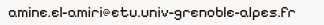

Hey, je suis Amine 👋
Étudiant en informatique, spécialisé dans la conception et le développement d'applications. Passionné par les echecs, la cuisine ,la patisserie et la boxe.
Parcours
Mes expériences & formations
Formations
Expériences
Ce que j'ai fait
Voici mes projets
Nutriscore BD
Analyse nutritionnelle via base de données relationnelle.
Chatbot Java
Agent conversationnel en Java avec logique de réponse.
Faerum
Jeu de plateau stratégique développé en Java.
Plus à venir...
Me contacter
Travaillons ensemble

06 43 43 43 43
À propos
Qui suis-je ?
En dehors du code, je pratique la boxe, la pâtisserie et la cuisine — trois disciplines qui demandent de la précision, persévérance et patience.